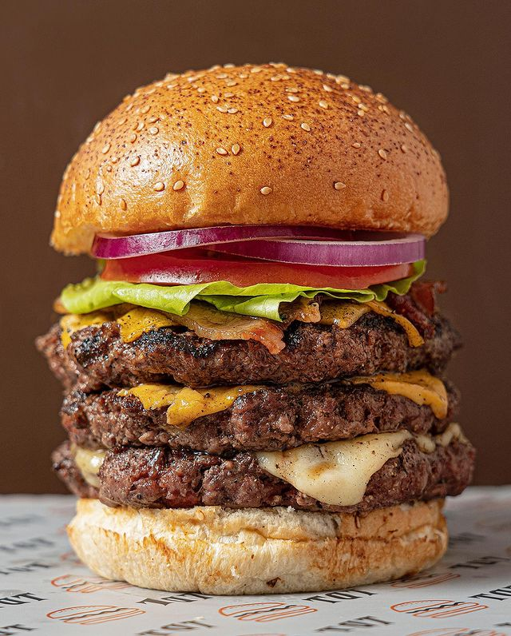

Volver
TIERRA DE TODOS HAMBURGUESAS @tdt_hamburguesas
Tierra De Todos Hamburguesas es un famoso restaurante de Cali, que tiene sedes en La Flora, Ciudad Jardín, Parque del perro, Novena, Centro, Centro comercial Único, es un lugar de comidas rápidas un poco más gourmet. Su página oficial es www.tdthamburguesas.co
CALIFICACIÓN: 3.8/5
Publicado el 17/02/2022 a las 5:56pm por Juan Diego Bustamante
LA TRIPLE HAMBURGUESA (HOUSE ANGUS) 
El pedido clásico del restaurante consiste en una hamburguesa doble de carne 100% angus de 26.800 pesos colombianos, acompañada de lechuga, tomate, queso y papas, a la cual podemos adicionarle tocineta por 4.300 pesos colombianos y una carne adicional por 9.500 pesos colombianos para armar la hamburguesa triple de tdt. A pesar de ser algo cara, se entiende por la calidad de los ingredientes.